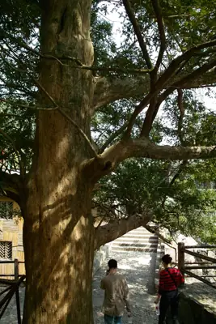

pranet · 出典付きの植物図鑑
Chinese Torreya
Torreya grandis Fortune ex Lindl. · Taxaceae

Torreya grandis is a species of conifer in either the family Taxaceae, or Cephalotaxaceae. Common names include Chinese Torreya and Chinese nutmeg yew, which refers to its edible seeds that resemble nutmeg and to its yew-like foliage, although it is not related to either nutmeg nor to the true yews belonging to the genus Taxus. Originating in the Jurassic period, about 170 million years ago, it is known as a "living fossil". T. grandis is a large tree that can attain height of 25 metres (82 ft), and possibly as high as 39 metres (128 ft). T. grandis is endemic to eastern and south-eastern China; it is found in the coastal provinces Fujian, Zhejiang, and Jiangsu, as well as in Anhui, Guizhou, Hunan, and Jiangxi inland. Its natural habitat are mountains and open valleys, often by streams, between 200 and 1,400 metres ASL. T. grandis is a precious tree species with multiple values. According to survey data, its economic life is more than a thousand years.
出典: Wikipedia (en): Torreya grandis · CC BY-SA 4.0
異名: Caryotaxus grandis (Fortune ex Lindl.) Henkel & W.Hochst., Tumion grande (Fortune ex Lindl.) Greene, Tunion grande (Fortune ex Lindl.) Greene
同定や利用は自己責任でお願いします。この図鑑だけを根拠に野生の植物を食べないでください。
出典
- 学名: World Flora Online Plant List 2026-06 · CC0 1.0
- 名前: Wikipedia の記事名と Wikidata · CC0 1.0（Wikidata）。記事名は事実
- 説明: Wikipedia (en): Torreya grandis · CC BY-SA 4.0
- 食用・毒性: World Checklist of Useful Plant Species (Diazgranados et al. 2020, RBG Kew) · CC BY 4.0
- 分布: World Checklist of Vascular Plants (WCVP), RBG Kew, version 2026-06-04 · CC BY 3.0
このページは pranet のデータから自動生成しています。コードは MIT、データは項目ごとのライセンス（説明）。